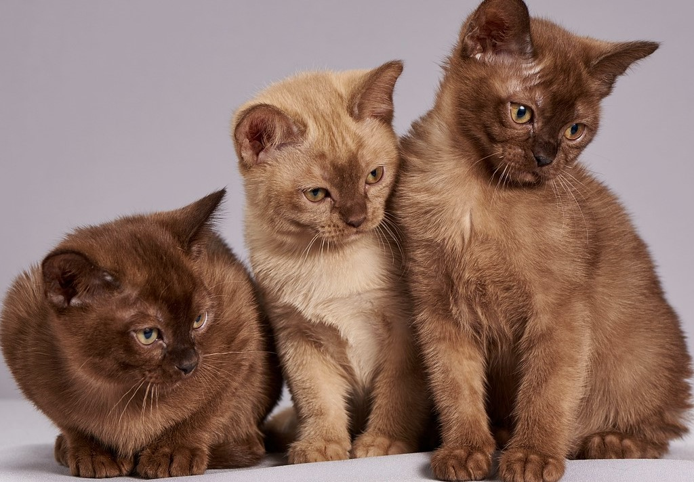
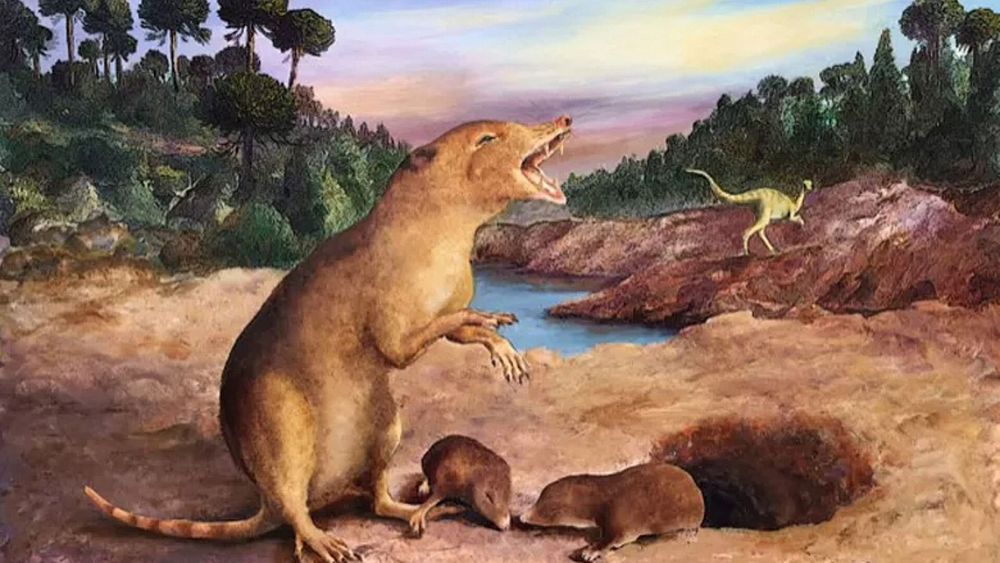
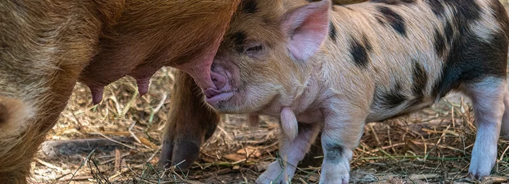
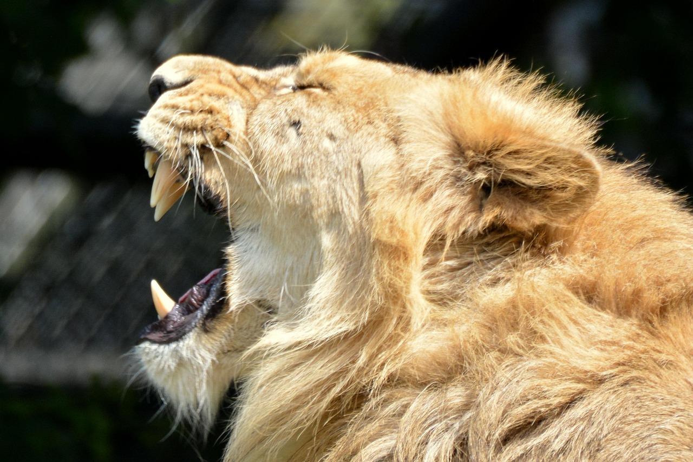
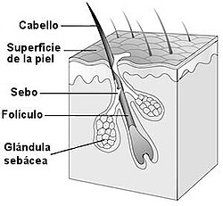
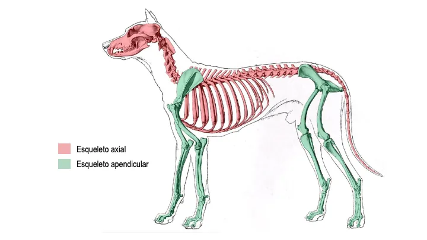
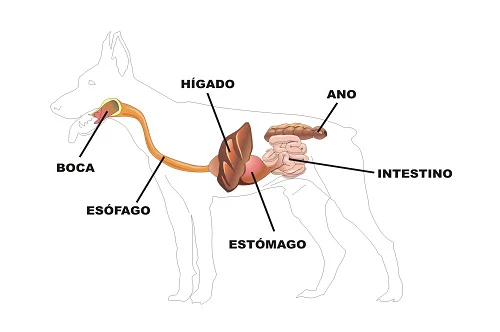
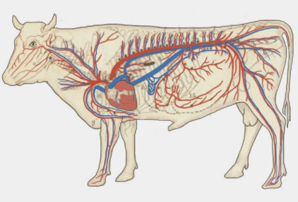
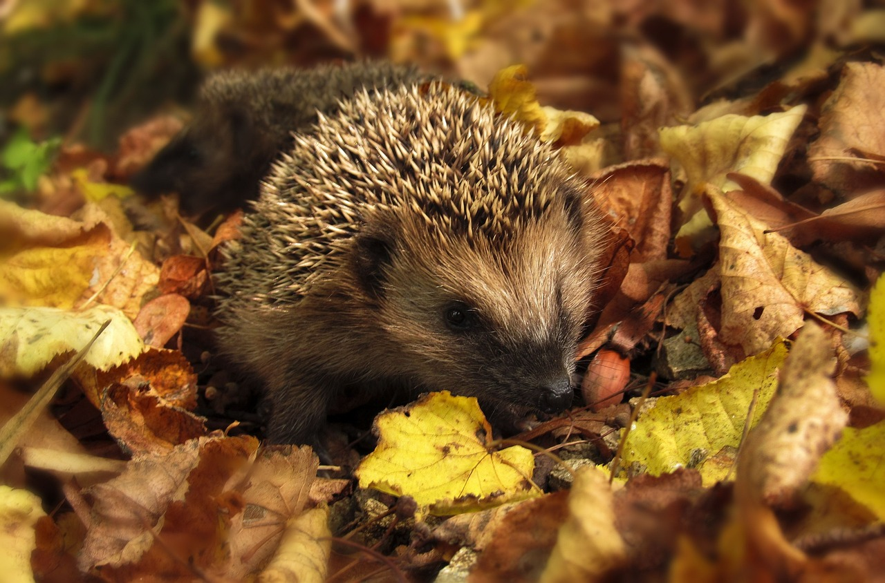

Vertebrados |
|
¿Qué son los mamíferos? |
|
|
 |
Los mamíferos (Mammalia) son una clase de animales vertebrados amniotas homeotermos (de sangre caliente) que poseen glándulas mamarias productoras de leche con las que alimentan a las crías. Esta es su característica principal, de la que derivan su nombre de mamíferos. |
Origen | Etapas en su evolución |
|
La gran mayoría de este grupo son vivíparos con la excepción de los monotremas: ornitorrinco y equidnas. Se trata de un taxón monofilético; es decir, todos descienden de un antepasado común que se remonta probablemente a finales del Triásico, hace más de 200 millones de años. Pertenecen al clado sinápsidos, que incluye a los mal llamados reptiles mamiferoides, un grupo de sinápsidos que no eran reptiles ni tampoco mamíferos, aunque estaban más relacionados con estos últimos que con los primeros, como los pelicosaurios y los cinodontos. Se conocen unas 5486 especies actuales. La mayoría 5209, son placentarios; 272 son marsupiales, y cinco son monotrematas (de un solo orificio).  |
Reptiles sinápsidos:Hace unos 300 millones de años, aparecieron los sinápsidos, antepasados lejanos de los mamíferos.Terápsidos:Un grupo avanzado de sinápsidos que mostraban ya características similares a los mamíferos, como dientes diferenciados y posición erguida de las patas.Cinodontos:Los cinodontos desarrollaron aún más rasgos mamalianos, como el paladar secundario y una mandíbula más parecida a la actual.Primeros mamíferos verdaderos:Surgieron en el Triásico superior. Eran pequeños, de hábitos nocturnos y probablemente insectívoros, con pelo y glándulas mamarias. |
Características de los mamíferos:
 |
Ejemplos de mamíferos:Mamíferos terrestres
Mamíferos acuáticos:
Mamíferos voladores
Mamíferos marsupiales
Mamíferos ovíparos (monotremas) |
Anatomía y fisiología |
|
DientesLos dientes se componen de sustancias que no pertenecen al sistema óseo, sino al tegumentario, como la piel, las uñas y el pelo. La materia que forma el cuerpo del diente es el marfil o dentina, que por lo general está revestido en el exterior de otra sustancia muy dura, el esmalte, mientras que en la base del diente la envoltura externa está compuesta por una tercera sustancia llamada cemento. En los mamíferos, los dientes se hallan siempre insertos en los huesos del cráneo que rodean la boca, que son, arriba, dos maxilares y dos premaxilares, y abajo, una mandíbula o quijada, que se articula directamente con la caja del cráneo. Este último, a su vez, enlaza con la columna vertebral por medio de dos abultamientos, o cóndilos, que hay a uno y otro lado del agujero por donde la médula espinal penetra para unirse al encéfalo. Aunque el número de vértebras de la columna vertebral varía mucho según las especies, las cervicales o vértebras del cuello son siete en todos los mamíferos a excepción de los perezosos que pueden tener hasta 10 y de los manatíes que solo poseen seis.  |
|
PielLa piel, generalmente espesa, está formada por una capa externa o epidermis, una capa profunda o dermis y un estrato subcutáneo repleto de grasa que le sirve de protección contra las pérdidas de calor, ya que los mamíferos son animales homeotermos. En ella se hallan dos de las sinapomorfias de la clase Mammalia: el pelo y las glándulas mamarias. Está implicada directamente en la protección del animal, la capacidad de termorregulación, la excreción de productos de desecho, la comunicación animal y la producción de leche (glándulas mamarias). Otras formaciones cutáneas de naturaleza córnea que presentan los mamíferos son las uñas, garras, cascos, pezuñas, cuernos y el pico en el caso del ornitorrinco.  |
|
EsqueletoEsqueleto axial:El esqueleto axial es la parte central del sistema esquelético en los vertebrados y cumple funciones esenciales como proteger los órganos vitales y brindar soporte estructural al cuerpo. Está compuesto por el cráneo, la columna vertebral, la caja torácica y el hueso hioides. El cráneo resguarda el cerebro, mientras que la columna vertebral protege la médula espinal y sostiene el cuerpo. La caja torácica, formada por las costillas y el esternón, protege el corazón y los pulmones. El hioides da soporte a la lengua y participa en la deglución. Este sistema también sirve como punto de anclaje para músculos que permiten el movimiento y la postura. Es fundamental para mantener la estabilidad y protección del organismo. Esqueleto apendicular:El esqueleto apendicular es la parte del sistema óseo que incluye los huesos de las extremidades superiores e inferiores, así como las estructuras que las conectan al tronco: la cintura escapular (clavícula y escápula) y la cintura pélvica (huesos de la pelvis). Su función principal es facilitar el movimiento y proporcionar soporte para actividades locomotoras y manipulativas. Las extremidades superiores comprenden el húmero, radio, cúbito, carpos, metacarpos y falanges, mientras que las inferiores incluyen el fémur, tibia, peroné, tarsos, metatarsos y falanges. Este conjunto óseo permite al cuerpo realizar movimientos complejos y coordinados esenciales para la vida diaria. Además existen otras formaciones óseas como los huesos del aparato hioides (sostén de la lengua), del oído medio, el hueso peneano de algunos carnívoros e incluso los huesos cardíacos de algunos bóvidos en los que osifica el cartílago cardíaco. |
|
Aparato digestivoEl aparato digestivo consiste en un conducto de entrada, o esófago, un tubo intestinal con salida al exterior y un estómago, más algunas glándulas anexas, las más importantes de las cuales son el hígado y el páncreas. Salvo contadas excepciones, el alimento sufre una preparación previa, la masticación, por medio de los dientes, órganos duros que guarnecen la boca y cuyo número y forma varían en gran medida según la alimentación de cada animal. En la mayoría de los casos hay, ante todo, unos dientes cortantes, llamados incisivos, a continuación, otros aptos para desgarrar, que son los colmillos, o caninos, y, por último, otros que sirven para triturar y moler, denominados muelas o molares. Por regla general, los mamíferos poseen una serie de dientes cuando son jóvenes y más tarde los cambian por otros. El aparato digestivo de los mamíferos es un complejo visceral tubular en el que los alimentos se someten a un intenso tratamiento para obtener el máximo aprovechamiento de los nutrientes. |
|
|  | Esquema del tránsito digestivo:
|
Aparatos respiratorio y circulatorio |
|
|
Estos dos aparatos son los encargados del intercambio de gases y su distribución por el organismo. Los mamíferos respiran el oxígeno presente en el aire que es inspirado a través de las vías respiratorias (boca, nariz, laringe y tráquea) y se distribuye por bronquios y bronquiolos a todo el complejo sacular que constituyen los alvéolos pulmonares. La sangre procedente de los tejidos transporta dióxido de carbono y al alcanzar los capilares alveolares, lo elimina a la vez que capta oxígeno. este será transportado nuevamente al corazón y desde allí a todos los tejidos para proporcionarles el gas necesario para la respiración celular, volviendo a transportar el dióxido de carbono residual hasta los pulmones. El diseño y el funcionamiento de todos estos órganos y tejidos está perfectamente sincronizado para rentabilizar el proceso, especialmente en especies acuáticas o subterráneas en las que el aporte de oxígeno es limitado.  |
|
Reproducción |
|
|
En todos los mamíferos se presentan los sexos separados y la reproducción es de tipo vivípara, excepto en el grupo de los monotremas, que es ovípara. El desarrollo del embrión va acompañado de la formación de una serie de anexos embrionarios, como son el corion, amnios, alantoides y el saco vitelino. Las vellosidades del corion, junto con el alantoides, se unen a la pared del útero y dan lugar a la placenta. Esta permanece unida al embrión por el cordón umbilical, y es a través de él por donde pasan las sustancias procedentes del cuerpo de la madre al del feto. El periodo de gestación y el número de crías por camada varían mucho según los grupos. Normalmente, cuanto mayor es el tamaño del animal, más largo es el periodo de gestación y menor el número de crías. La mayor parte de los mamíferos proporcionan a sus hijos cuidados paternales. Por último, es también característico de los mamíferos su modo de reproducirse. Si bien algunas especies son ovíparas, es decir, el óvulo fecundado sale al exterior formando un huevo, en la inmensa mayoría el embrión se desarrolla dentro del cuerpo de la madre y nace en un estado más o menos avanzado. De aquí se deriva una primera clasificación del grupo en mamíferos que ponen huevos y mamíferos vivíparos. A los segundos se les ha llamado terios, término derivado del griego clásico que significa «animales», y a los que son ovíparos, prototerios, esto es, primeros animales, ya que el registro fósil permite suponer que los primeros mamíferos que aparecieron en el mundo pertenecían a esta categoría. Todavía en los terios cabe distinguir entre los mamíferos cuyos hijos nacen en un estado de desarrollo muy atrasado, teniendo que pasar algún tiempo en una bolsa que la hembra posee en la piel del vientre, y aquellos otros en que no se observa semejante particularidad. Los primeros son los metaterios (también denominados marsupiales), es decir, los animales que vienen detrás, los que siguen a los prototerios, y los últimos los euterios o mamíferos placentarios. Dentro de la clase que nos ocupa, estos constituyen la gran mayoría. |
|
Diversidad |
Adaptación a ambientes |
|
Los mamíferos constituyen un grupo de seres vivos muy diverso y, a pesar del reducido número de especies que lo forman en comparación con otros taxones del reino animal o vegetal, su estudio es con mucho el más profundo en el campo de la zoología. Solo con comparar la especie animal de mayor envergadura que ha existido, la ballena azul (Balaenoptera musculus), que puede alcanzar las 160 toneladas, con el murciélago de hocico de cerdo de Kitti (Craseonycteris thonglongyai), considerado el mamífero de menor tamaño, cuyos adultos apenas alcanzan los 2 gramos de peso, podemos observar que entre las especies más y menos voluminosas la diferencia en masa corporal es de 80 millones de veces. Reptan, saltan, corren, nadan y vuelan. Muchos de ellos son capaces de aprovechar la más variada gama de recursos alimenticios, mientras otros están especializados en determinados alimentos. Este sinfín de circunstancias ha forzado a estos animales a evolucionar adoptando una multitud de formas, estructuras, capacidades y funciones. Resulta curioso comprobar cómo en muchos casos, especies muy distanciadas entre sí geográfica y filogenéticamente han adoptado estructuras morfológicas, funciones fisiológicas y aptitudes de comportamiento similares. A este fenómeno se le conoce como evolución convergente. La similitud en la cabeza de un lobo gris (Canis lupus, un placentario), y un tilacino (Thylacinus cynocephalus, un marsupial), es sorprendente, siendo dos especies tan distanciadas filogenéticamente. El erizo común europeo (Erinaceus europaeus, placentario) y el equidna común (Tachyglossus aculeatus, monotrema) pueden confundir a cualquier profano, pues no solo han adoptado la misma estructura de defensa, sino que comparten morfologías parecidas para explotar recursos alimenticios similares.  |
La gran diversidad de los mamíferos es fruto de una extraordinaria capacidad de adaptación que les ha permitido distribuirse por la gran mayoría de los ambientes del planeta, lo que ha dado lugar a multitud de diferencias anatómicas, fisiológicas y de comportamiento. Los mecanismos desarrollados por cada especie para conseguir adaptarse al medio evolucionaron de forma independiente. Así, mientras que algunas especies como el oso polar (Ursus maritimus) se protegieron del frío con una densa capa de pelo que con el reflejo de luz se ve blanco, otros como los pinnípedos o los cetáceos lo hicieron produciendo una densa capa de tejido graso bajo la piel. En otros casos, especies muy distanciadas filogenéticamente recurren a mecanismos similares para adaptarse a circunstancias parecidas. El desarrollo de los pabellones auriculares del fénec (Vulpes zerda) y del elefante africano (Loxodonta africana) para incrementar la superficie de intercambio calórico y favorecer la homeostasis es un claro ejemplo. La reconquista de las aguas por parte de animales que eran completamente terrestres es otra de las muestras de la capacidad de adaptación de los mamíferos. Distintos grupos de la clase han evolucionado de forma totalmente independiente para retornar al medio acuoso y explotar los nichos marinos y fluviales. Topos y otros zapadores, principalmente roedores, lagomorfos y algunos marsupiales habitan bajo tierra, algunos pasando enterrados la mayor parte de su vida. Han conseguido conquistar el interior de la superficie terrestre, pero la percepción del exterior, el movimiento bajo tierra, las relaciones entre individuos y los requisitos nutricionales y respiratorios han sido algunas de las cuestiones que han tenido que resolver a lo largo de su evolución, sufriendo durante ella notables transformaciones y especializaciones imprescindibles. |